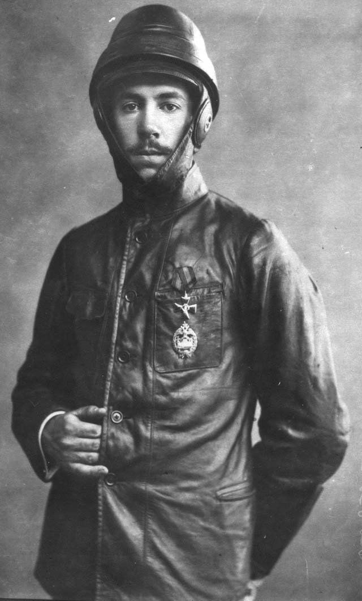

От стенда в Кучине — к заводским и фронтовым аэросаням
Читается подряд. Нажми на удар — откроется подробный разбор с источниками.
Около 1904 года в Аэродинамическом институте в Кучине под Москвой инженер Сергей Неждановский поставил двигатель внутреннего сгорания с воздушным винтом на прямоугольную раму с двумя лыжами.Узнать подробнееСвернуть
Неждановский изучал там, как работает воздушный винт. Мотор с пропеллером на лыжах был сначала стендом для этих опытов. Президентская библиотека датирует сани 1903–1904 годами, историк М. Б. Саукке — 1904 годом.
Источники: Президентская библиотека, «Сергей Сергеевич Неждановский (1850–1940)»; М. Б. Саукке, «Аэросани в России» (публикация сайта «Семейная история» о КБ А. Н. Туполева).
В 1905 году журнал «Воздухоплаватель» написал о новинке как о «санях с воздушным винтом для передвижения по снегу».Узнать подробнееСвернуть
Так заметку пересказывают Президентская библиотека и М. Б. Саукке. Сам номер журнала в открытом доступе мы не нашли, поэтому слова в кавычках даны по их пересказу.
Источники: Президентская библиотека, «Сергей Сергеевич Неждановский (1850–1940)»; М. Б. Саукке, «Аэросани в России» (публикация сайта «Семейная история» о КБ А. Н. Туполева).
Снимок саней из Кучинского института напечатали в 1910 году: рама на двух лыжах, над ней мотор и большой двухлопастный винт.Узнать подробнееСвернуть
Подпись в книге «На рубеже двух веков», приложении к газете «Московский листок», — «Воздухоплавательный институт Д. П. Рябушинского. Сани, приводимые в движение воздушным винтом». Кто построил сани на снимке, подпись не сообщает. Этот снимок стоит у входа в зал.
Источник: «На рубеже двух веков (XIX—XX)», бесплатная премия к газете «Московский листок» за 1910 год (М., 1910); скан на Викискладе.
Неждановский заметил, что скорость и проходимость его саней сильно меняются в зависимости от того, какой лежит снег, и сел за расчёты.Узнать подробнееСвернуть
Аэросани он оставил другим. В 1916 году Неждановский запатентовал моторные сани другого устройства — с «лыжно-цепным» движителем, близкие к современному снегоходу.
Источник: Президентская библиотека, «Сергей Сергеевич Неждановский (1850–1940)».
В 1907 году на московском заводе «Дукс» построили и испытали «лыжный автомобиль» Ю. А. Меллера и А. Д. Докучаева.Узнать подробнееСвернуть
Это были лёгкие деревянные санки на полозьях из обычных беговых лыж. Спереди — руль, который поворачивал вынесенный вперёд конёк. Сзади — мотор «Дион Бутон» воздушного охлаждения мощностью 3,5 лошадиные силы. Через два шкива и ремень он вращал двухлопастный винт. По насту санки шли со скоростью до 16 километров в час.
Источник: М. Б. Саукке, «Аэросани в России» (публикация сайта «Семейная история» о КБ А. Н. Туполева).
В мае 1908 года машину «Дукса» под названием «аэросани» показали на первой Московской автомобильной выставке.Узнать подробнееСвернуть
Энциклопедия 1926 года тоже ведёт счёт с 1908 года:
«Первые А. были построены у нас в России в 1908 из автомобильного шасси, при чем колеса были заменены лыжами, мотор снабжался тянущим или толкающим винтом, движение к-рого происходило от мотора через цепь. Однако, такая конструкция оказалась слишком тяжелой и не получила распространения на практике».
У Саукке винт «Дукса» вращает ремень, у энциклопедии — цепь. Источники расходятся и в этом.
Источники: М. Б. Саукке, «Аэросани в России» (публикация сайта «Семейная история» о КБ А. Н. Туполева); «Аэросани», Большая советская энциклопедия, 1-е изд., т. 4 (М., 1926), стб. 224–226, автор статьи — М. Петров.
Зимой 1910 года об аэросанях киевского студента Игоря Сикорского написала газета «Утро России»: «Сани с тремя седоками легко и быстро двигались».Узнать подробнееСвернуть
Сикорский строил сани вместе с другим студентом Киевского политехнического института, Ф. И. Былинкиным. Мотор «Анзани» в 30 лошадиных сил давал до 74,7 километра в час. Главное новшество — винт сидел прямо на валу двигателя, без ремня и цепи. Позже, с толкающим винтом, эта схема стала в аэросанях почти единственной.

Игорь Сикорский в 1914 году. Фото Карла Буллы; Викисклад, общественное достояние. Источники: «Утро России», январь 1910 года, телеграмма «Киев, 25-го января» (перепечатка starosti.ru); М. Б. Саукке, «Аэросани в России» (публикация сайта «Семейная история» о КБ А. Н. Туполева).
В 1910 году студент технического училища А. С. Кузин запатентовал аэросани с несущим кузовом. Они первыми среди русских саней свободно шли по снежной целине.Узнать подробнееСвернуть
Кузов у Кузина сам держал нагрузку, как фюзеляж самолёта, и опирался на четыре лыжи в трёх точках: так на неровной дороге в нём меньше напряжений. Мотор «Анзани» в 10 лошадиных сил через цепь вращал винт; скорость — около 53,4 километра в час.
Источник: М. Б. Саукке, «Аэросани в России» (публикация сайта «Семейная история» о КБ А. Н. Туполева).
В феврале 1911 года в окрестностях Царского Села прошёл первый аэросанный пробег, в январе 1912-го в Москве — второй, и жюри возглавлял Н. Е. Жуковский.Узнать подробнееСвернуть
Первый пробег устроило Российское автомобильное общество. Он показал, что аэросани годятся не только для наезженной дороги, но и для рыхлого снега. Второй прошёл по Петербургскому шоссе по почину Русского общества воздухоплавания и первого Российского автомобильного клуба.
Источник: М. Б. Саукке, «Аэросани в России» (публикация сайта «Семейная история» о КБ А. Н. Туполева).
В 1912 году Русско-Балтийский вагонный завод в Риге по заказу военного министерства начал строить аэросани партией.Узнать подробнееСвернуть
Это были первые серийные аэросани. Завод не стал ставить винт на автомобильное шасси, как «Дукс», а сделал машину специально для снега: авиационный мотор сзади, винт на валу двигателя в ограждении, кузов на четырёх лыжах с поворотной передней парой.
Источник: М. Б. Саукке, «Аэросани в России» (публикация сайта «Семейная история» о КБ А. Н. Туполева).
В Первую мировую немецкая армия получила больше десяти типов аэросаней. 18 сентября 1915 года русский Главный комитет по снабжению армии Всероссийского земского союза решил строить свои.Узнать подробнееСвернуть
Комитет выслушал профессора Н. Р. Бриллинга и дал деньги. Конструкцию разработал А. С. Кузин. В 1915–1916 годах построили серию из 24 аэросаней, часть из них вооружили пулемётами. Сани возили связь, грузы и раненых.
Источник: М. Б. Саукке, «Аэросани в России» (публикация сайта «Семейная история» о КБ А. Н. Туполева).
В 1919 году Жуковский и ЦАГИ создали комиссию по постройке аэросаней. В марте 1921 года её сани «Бека» шли по льду Финского залива к Кронштадту.Узнать подробнееСвернуть
Комиссию назвали КОМПАС. Трое саней «Бека» Бриллинга и Кузина подвозили наступающим частям боеприпасы. Двое провалились в проруби, третьи вошли в Кронштадт и получили орден Красного Знамени. К 1924 году, по энциклопедии 1926 года, у нас появились цельнометаллические аэросани из кольчугалюминия.
Источники: М. Б. Саукке, «Аэросани в России» (публикация сайта «Семейная история» о КБ А. Н. Туполева); «Аэросани», Большая советская энциклопедия, 1-е изд., т. 4 (М., 1926), стб. 224–226, автор статьи — М. Петров.